vue基础
引入
方法一: 通过script引入cdn资源 https://unpkg.com/vue@next
方法二: 下载资源文件自行托管通过script引入
方法三: 通过脚手架自动生成引入,下载@vue/cli
| 全局安装@vue/cli | npm i -g @vue/cli |
| 创建项目 | vue create 项目名称 |
方法四: 通过包管理器,npm i vue@next,下载单文件组件,npm i @vue/compiler-sfc -D
方法五: 通过vite构建
| npm6.x | npm init vite@latest project-name --template vue |
| npm7+ | npm init vite project-name -- --template vue |
| 进入项目 | cd project-name |
| 下载引入资源 | npm install |
| 运行 | npm run dev |
渲染
通过template指向
1.2.3.4.5.Vue.createApp({ template: `<div> hello vue </div>`}).mount("挂载位置");通过render方法
1.2.3.4.5.Vue.createApp({ render(){ return Vue.h('div',{class: "hello"},null,'hello vue'); }}).mount("#app");区别
template是借助vue内部提供的语法糖，最终还是会编译成render写法，且render的优先级要高于template的
Vue.h
有四个参数,分别是 标签名、属性、子元素、内容,类型对应 字符串、对象、Vue.h、字符串
语法
插值
通过{{}}进行插值动态渲染,每次里面的属性值发生改变时页面也会自动更新渲染
如果在标签上面加上v-once那么插值处的内容就不会更新
里面接收一个有返回值的表达式,undefined、null都不会显示
1.2.3.4.5.6.7.8.9.10.11.12.13.14.15.16.17.18.19.20.21.Vue.createApp({ data(){ return { bool: true, str: "string", num: 123, obj: {a: 1}, arr: [1,2,3], undefine: undefined, nil: null }; }, methods: { fn(){ return "函数" } }, template: `<div> Boolean: {{bool}}、String: {{str}}、Number: {{num}}、Object: {{obj}}、Array: {{arr}}、undefined: {{undefine}}、null: {{nil}}、function: {{fn()}} </div>`}).mount("#app");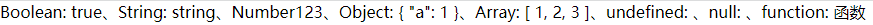v-html
这个指令就是将字符串作为html代码渲染，和原生js里面innerHTML是一样的
1.2.3.4.5.6.7.8.9.10.11.12.Vue.createApp({ data(){ return { html: `<div> <h3> 使用v-html </h3> </div>` } },template: `<div v-html="html"></div>`}).mount("#app");Data Property和方法
Data Property主要是存放全局的变量,在传入的对象中有个data属性,系统要求是一个方法,为什么是个方法,牵扯到引用值,每次返回的都是一个全新的对象,互不干扰,至于方法在对象里面有个methods属性,它是一个对象，存放的都是全局的或者组件内的方法
1.2.3.4.5.6.7.8.9.10.11.12.13.14.15.16.17.18.19.20.21.22.const app = Vue.createApp({ data() { return { count: 4 } }, methods: { increment() { //`this` 指向该组件实例 this.count++ } }})const vm = app.mount('#app')console.log(vm.$data.count) // => 4console.log(vm.count) // => 4//修改 vm.count 的值也会更新 $data.countvm.count = 5console.log(vm.$data.count) // => 5//反之亦然vm.$data.count = 6console.log(vm.count) // => 6vm.increment();console.log(vm.count); // => 5计算属性与监听器
计算属性是对象中的computed属性,它是一个对象,和使用变量是一样的,当方法里面的返回值发生改变时会重新执行方法,否则除去第一次使用会执行方法,后面都是拿的计算后结果的缓存,不会再执行方法
监听器是对象中的watch属性,它是一个对象,方法名就是要监听的属性或其它(比如$route),当监听的值发生改变时会执行对应方法
1.2.3.4.5.6.7.8.9.10.11.12.13.14.15.16.17.18.19.20.21.22.23.24.25.26.Vue.createApp({ computed: { sum(){ console.log("计算属性sum执行"); return this.num1 + this.num2; } }, watch: { num1(newVal){ console.log("监听器num1发生改变,值未 => " + newVal); } }, data(){ return { num1: 1, num2: 3 }; }, template: ` <div> <p>{{sum}}</p>//第一次sum会执行方法,然后将计算结果缓存下来 <p>{{sum}}</p>//这一次不会再执行sum方法了,会直接渲染缓存结果 <button @click="num1 = 2">改变num1</button>//当点击这个按钮的时候sum和num1方法都会执行一遍 </div> `}).mount("#app");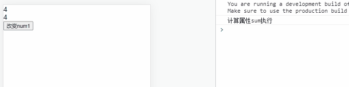可以看到上面结果图,sum方法执行打印只打印了一次,第二次没有打印说明没有执行,当num1发生改变时sum再次执行不过也是一次后面拿的都是缓存,这样会有利于页面的渲染,节省多余的业务逻辑花费的时间,同时num1发生改变,监听器里面的num1方法也执行了,并且知道num1改变后的值
单向绑定
v-bind这个指令是用于动态绑定属性值，像按钮的disabled,就能控制它是否能够被点击，我们通过事件去控制属性值就好了，主要还是用户父子组件传参,它能够缩写成:,也是一样的功能
1.2.3.4.5.6.7.8.9.10.11.12.13.14.Vue.createApp({ data(){ return { title: "你好", disabled: true } }, template: `<div class='bind'> <div v-bind:title="title">鼠标悬浮看title</div> <button :disabled="disabled">禁用button</button> </div>`}).mount("#app");//后面我们就可以用过事件去控制按钮是否能够被点击以及title显示什么//我们只需要修改data当中的disabled和title即可双向绑定
v-model可以在一些表单元素以及组件身上进行双向数据绑定
1.2.3.4.5.6.7.8.9.10.11.Vue.createApp({ data(){ return { val: "" } }, template: `<div> Origin: <input type="text" placeholder="edit me" v-model="val"/> Target: <input type="text" v-model="val" placeholder="edit me"/> </div>`}).mount("#app");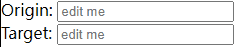修饰符| v-model.number | 类型转换成number类型 |
| v-model.trim | 清空前后空格 |
| v-model.lazy | 在change事件触发后同步 |
双向绑定原理
1.2.3.4.5.6.7.8.9.10.11.12.13.14.15.16.17.18.19.20.21.22.//html<input type="text" class="txt" placeholder="edit me"/><span class="value">Message: </span>//scriptlet obj = { val: ""},val = obj.val;let txt = document.querySelector(".txt"), value = document.querySelector(".value");txt.onchange = function(){ obj.val = val = txt.value; value.innerText = "Message: " + txt.value;}Object.defineProperty(obj,"val",{ set(newVal){ txt.value = val = newVal; value.innerText = "Message: " + newVal; }, get(){ return Object.assign(obj).val; }});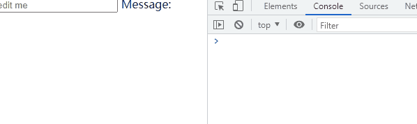Class与Style绑定
这个主要是应用动态添加样式,通常是和v-bind配合使用
1.2.3.4.5.6.7.8.9.10.11.12.13.14.15.16.17.18.19.20.21.22.23.24.25.26.27.28.29.30.31.32.33.34.Vue.createApp({ data(){ return { style: { color: "#fff", background: "pink", width: "100px", height: "100px" }, style1: { "text-align": "center", "line-height": "100px" } } }, template: ` <div> //动态绑定class <div :class="{类名: 布尔值或者一个变量,类名: 布尔值...(多个通过,隔开)}"></div> <div :class="[类名或者变量(变量存的也是类名),...(多个通过,隔开)]"></div> //写法有很多种,原理其实都是差不多的 <div :class="[{类名: 布尔值或者变量},"类名']"></div> <div :class="[布尔值或者变量 ? 类名 : 类名,"类名']"></div> //绑定style <div :style="{样式名: 值(要不就是字符串,不然就是变量),(多个通过,隔开)}"></div> //也可以绑定变量 <div :style="style"></div> <div :style="[style,style1]"></div> //添加多个值 <div :style="{display: ['-webkit-box','flex']}"></div> <div> </div> `})条件渲染
vue中控制显示和隐藏提供了两个指令,一个是v-if,另一个是v-show,它两个是有区别的
1.2.3.4.5.6.7.8.9.10.11.12.13.Vue.createApp({ data(){ return { show: false } }, template: ` <div class="show"> <div v-show="show">v-show</div> <div v-if="show">v-if</div> </div> `}).mount("#app");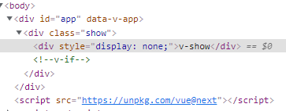
1.2.3.4.5.//可以看到上面的结果图//v-if是根据里面的值来判断是否渲染，而v-show第一次里面的值不管是false还是true,它都会渲染上去//v-if是通过原生js中的createElement和removeElement去实现显示和隐藏的,这个是针对于少量的,比如显示隐藏后就不再显示了就可以用它，比较消耗性能//v-show是先渲染出来，在去根据值通过display来控制元素是否显示和隐藏//v-if还可以配合v-else-if还有v-else,这种是渲染符合条件的元素列表渲染
列表渲染是使用v-for指令
1.2.3.4.5.6.7.8.9.10.11.12.13.14.15.16.17.18.19.20.21.22.23.24.25.26.27.28.29.30.31.32.33.34.35.36.37.38.Vue.createApp({ data(){ return { users: [ { id: "001", name: "李某人", age: 18, hobily: ["键盘","电影"] }, { id: "002", name: "王某人", age: 20, hobily: ["游戏","小说"] } ], obj: { id: "1", title: "渲染对象", name: "李某", time: "2021/10/08" } } }, template: `<div class="content"> //渲染数组 <ul> <li v-for="(item,index) in users" :key="item.id">我叫{{item.name}},今年{{item.age}}岁了</li> //item是数组中某个值,index是下标值,这个 </ul> //渲染对象 <p v-for="(value,key,index) in obj" :key="obj.id"> {{key}}: {{value}} -> {{index}} </p> //value是对象中的属性值,key是对象中的属性名,index是遍历的下标 </div>`}).mount("#app");事件绑定
vue使用v-on进行事件绑定，简写@
1.2.3.4.5.6.7.8.9.10.11.12.13.14.15.16.17.18.19.20.21.Vue.createApp({ data(){ return { acount: 1 } }, methods: { greet(ev){ console.log("事件触发的对象 -> ",ev.target,"事件注册监听的对象",ev.currentTarget); }, Add(){ this.acount += 1; } }, template: `<div> <button v-on:click="acount += 1">Add 1</button> <button @click="acount -= 1">Reduce 1</button> <p>acount = {{acount}}</p> <p @click="Add(),greet($event)">Add 1<div style="width: 50px;height: 50px;background: green;"></div></p> </div>`}).mount("#app")同一个事件可以绑定多个方法,使用,隔开
vue内部还提供了多个修饰符,如下:
| .stop | 阻止冒泡 |
| .prevent | 阻止默认事件 |
| .once | 只触发一次 |
| .self | 事件触发对象和事件注册对象相同时触发 |
| .capture | 采用事件捕获机制 |
| .passive | 默认事件先于事件先触发,不加则会等待事件方法执行完才会执行默认事件 |
.passive就比如注册了一个scroll事件，如果在监听的事件方法里面做非常麻烦的业务逻辑,就比如要花费3s，如果没有使用.passive，那界面就会等3s后才会滚动,会非常卡顿,而加上.passive则会先滚动再执行事件方法里面的业务逻辑
是放在keyup事件身上才会有用
| .enter | 按下enter键才能触发 |
| .tab | 按下tab键才能触发 |
| .delete | delete |
| .esc | esc键 |
| .space | 空格键 |
| .alt | alt键 |
| .ctrl | ctrl |
| .shift | shift |
| .meta | window键或者command键... |
| .left | 左边鼠标点击 |
| .middle | 中间点击 |
| .right | 右边点击 |
| .down | 鼠标按下触发 |
| .up | 鼠标弹起触发 |
| .exact | 精准 |
exact就比如ctrl键按下ctrl + 任何键照样触发，如果加了.exact那就只能是按下ctrl才能触发
这些修饰符都可以一起使用,有些是有冲突的，比如.prevent和.passive，因为阻止了默认事件,更本就不会触发默认事件,所以加上.passive毫无意义
组件
创建
组件分为全局组件和局部组件，所以创建的方式是有丁点不一样,具体创建方式如下:
1.2.3.4.5.6.7.8.9.10.11.12.13.14.15.16.17.18.19.20.21.22.//局部创建组件,它使用前需要注册在相应的页面里,哪个页面需要使用该组件就在components属性中注册let localCom = { template: "<div>局部创建组件</div>"};let app = Vue.createApp({ template: ` <div> <global-component></global-component> <local-com></local-com> //组件可以多次使用 <local-com></local-com> </div> `, components: { localCom//注册 }});//全局创建组件app.component("global-component",{ template: "<div>全局创建组件</div>"});let vm = app.mount("#app");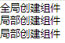组件传值
父子传值
父子传参可以通过自定义属性和props，在父元素身上自定义属性，子元素通过props去接收
还可以直接在子元素中通过this.$parent.属性拿到相应的属性值，或者通过this.$attrs.属性拿到相关的值
1.2.3.4.5.6.7.8.9.10.11.12.13.14.15.16.17.18.19.20.21.22.23.24.25.26.27.28.29.30.31.32.33.34.35.36.37.38.39.40.41.42.43.44.45.let app = Vue.createApp({ data(){ return { msg: "这是父元素传给子元素动态的"//后续只要改变这个属性值子元素那边接收到的也是改变后的值 } }, template: ` <div> //写死的传参方式 <component-name msg="这是父元素传给子元素写死的"></component-name> //动态的传参方式 <component-name :msg="msg"></component-name> <button @click="msg = '改变后msg的值'">改变msg的值</button> </div> `});//子元素//子元素接收属性值有两种写法//方法一app.component("component-name",{ props: ["msg"], mounted(){ //vue中的生命周期钩子方法 console.log(this.$parent.msg);//结果: 这是父元素传给子元素动态的 console.log(this.$attrs.msg);//结果: 这是父元素传给子元素动态的 }, template: ` <div>{{msg}}</div> `});//方法二app.component("component-name",{ props: { msg: { type: String,//声明接收msg的类型 default: ""//默认msg的值 required: true//必传 validator: function(value){ return Boolean类型; }//验传过来的值是否合格 }, template: `<div>{{msg}}</div>` }});let vm = app.mount("#app");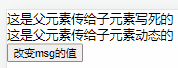子父传值
子父传值一般通过在父元素中通过自定义事件注册,在子元素中通过$emit触发并且传参
还可以通过$refs拿到子组件中的相关属性值,还有$chilren，不过它在vue3.x中已经被废弃了，还可以通过$listeners拿到父元素身上绑定的事件名以及事件方法,不过都被废弃了
1.2.3.4.5.6.7.8.9.10.11.12.13.14.15.16.17.18.19.20.21.22.23.24.25.26.27.28.29.30.31.32.33.34.35.36.37.38.39.40.41.42.43.44.45.let app = Vue.createApp({ data(){ return { msg: "这是父元素给的msg" } }, methods: { updateMsg(ev){ console.log(ev); } }, mounted(){ console.log(this.$refs.child.msg); }, template: ` <div> <h2>父元素</h2> <p>msg => {{msg}}</p> <component-name @updateMsg="updateMsg($event)" ref="child"></component-name> </div> `});app.component("component-name",{ emits: ["updateMsg"],//这个在vue3.x中要给一个这个东西,不然会警告 template: ` <div> <h3>子元素</h3> <input type="text" v-model="msg" placeholder="update content"/> <button @click="updateMsg()">传值给父元素</button> </div> `, data(){ return { msg: "" } }, methods: { updateMsg(){ this.$emit("updateMsg",this.msg); } }})let vm = app.mount("#app");//子传父亲其实还可以通过父传子方法,子元素想要改变父元素的时候就通过执行相应的方法名称//同时还可以通过ref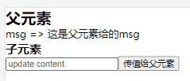祖级传递
多级传递有多级祖元素传给孙元素,还有孙元素传给祖元素
一般祖父传给孙子,祖父用provide传递,孙子使用inject接收,而孙子传祖父,一般都是在祖父身上通过$on注册监听方法,在孙子里面通过$emit触发和传参
$on也可以用在兄弟组件中传值
$on在vue2.x中是可以使用了,但是到了vue3.x已经被废弃了，主要是难以后期维护,推荐使用vuex
1.2.3.4.5.6.7.8.9.10.11.12.13.14.15.16.17.18.19.20.21.22.23.24.25.26.27.28.29.30.31.32.33.34.35.36.37.38.39.40.41.42.43.44.45.46.47.48.let app = Vue.createApp({ mounted(){ this.$on("register",this.register);//注册监听 //$off是移除监听,是个方法,传注册时传的名字 //还有$once 这个和$on用法一样,只不过它这个只会触发一次 //这些在vue3.x都移除了 }, provide(){ return { value: "传子孙的值" } }, methods: { register(ev){ console.log(ev) } }, template: ` <div> <h2>祖父级</h2> <component-father></component-father> </div> `});app.component("component-grandson",{ inject: ["value"],//接收祖父的值 template: ` <div> <h4>孙子级</h4> <p>祖父给我传递的值是【{{value}}】</p> <button @click="trigger()">给祖父传个参</button> </div> `, methods: { trigger(){ this.$emit("register","你好祖父,我是你孙子"); } }})app.component("component-father",{ template: ` <div> <h3>父元素</h3> <component-grandson></component-grandson> </div> `})let vm = app.mount("#app");插槽
vue提供了一个指令v-slot，它主要是运用在组件插值中,看代码效果吧
1.2.3.4.5.6.7.8.9.10.11.12.13.14.15.16.17.18.19.20.21.let app = Vue.createApp({ template: ` <div> <component-name> //这是vue2.x写法 <p v-slot="slotName">这是vue2.x写法</p> //这是vue3.x写法，它必须是一个组件或者template <template #slotName> <p>这是vue3.x写法</p> </template> </component-name> </div> `});app.component("component-name",{ template: `<div> <slot name="slotName"></slot> //如果没有name属性,那就是默认name="default" 那那边也不需要slot属性了 </div>`})app.mount("#app");动态组件
vue经常使用is来切换不同组件,它是component身上的一个属性,它里面的属性值就是要渲染的组件名,所以它一般是个动态的,配合v-bind一起使用
1.2.3.4.5.6.7.8.9.10.11.12.13.14.15.16.17.18.19.20.21.22.23.24.25.26.27.28.29.30.31.32.33.34.35.36.37.38.39.40.41.42.43.44.45.46.47.let app = Vue.createApp({ data(){ return { showComponentName: "component1" } }, template: ` <div> <div> <span @click="switchTab('component1')">component1</span> <span @click="switchTab('component2')">component2</span> </div> <component :is="showComponentName"></component> </div> `, methods: { switchTab(name){ this.showComponentName = name; } }});app.component("component1",{ template: ` <div>组件一</div> `});app.component("component2",{ data(){ return { color: "#000" } }, methods: { changeColor(color){ this.color = color; } }, template: ` <p>字体颜色</p> <div> <span @click="changeColor('red')">红色</span> <span @click="changeColor('pink')">粉红</span> </div> <div :style="{color}">组件二</div> `});app.mount("#app");缓存组件
有时候也先希望切换的时候保留原来的样子，vue提供了keep-alive组件,用它包裹组件就会缓存组件
1.2.3.4.5.6.//把切换组件的按钮代码中的component代码换成下面这个<keep-alive> <component :is="showComponentName"></component><keep-alive>//运行看component2的效果,现将字体改变颜色再切至component1再切回来//这块有时候想要一些组件不缓存,所以经常使用v-if配合使用异步组件
在处理一些需求时,有些模块需要从服务器获取,为了简化,vue提供了一个defineAsyncComponent，里面接收一个回调方法或者对象,具体用法如下
1.2.3.4.5.6.7.8.9.10.11.12.13.14.15.16.17.18.19.20.21.22.23.24.25.26.27.28.29.30.31.32.33.34.35.let app = Vue.createApp({ template: ` <div> 延迟三秒渲染组件 <component-name></component-name> </div> `});app.component("component-name",Vue.defineAsyncComponent(() => new Promise((resolve,reject) => { setTimeout(() => { resolve({ template: ` <div>异步组件内容</div> ` });//当reject时就不会渲染这个组件,且会console一个错误,错误的原因就是reject里面的原因 },3000);})));app.mount("#app");//它还可以配合import一起使用 Vue.defineAsyncComponent(() => import("组件地址"));//上面都是简写方式 它内部本身是传一个对象，有多个optionsdefineAsyncComponent({ loader: //方法，这其实就是原来的那个回调函数 () => import("组件地址")或者new Promise(), delay: //Number类型,延迟加载的组件显示的时候,毫秒级 loadingComponent: //加载组件过程中显示的组件 errorComponent: //当加载失败时显示的组件 timeout: //设置超时时间,毫秒级 suspense: //组件是否挂起,当设置为true时将忽略设置的加载、错误、延迟和超时选项 onError(error,retry,fail,attempts){ //error: 错误对象 //retry: 重新加载方法 //fail: 失败执行方法,retry和fail就像Promise的resolve和reject一样 //attempts: 最大允许失败次数 }});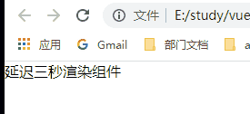suspense组件
vue为加载异步组件提供了suspense组件,可以在加载的过程中显示加载的组件，主要是两个template,两个占位的,在加载的过程中显示#fallback,加载完成显示#default
1.2.3.4.5.6.7.8.9.10.11.12.13.14.15.16.17.18.19.20.21.22.23.let app = Vue.createApp({ template: ` <div> 延迟三秒渲染 <suspense> <template #default> <component-name></component-name> </template> <template #fallback> <div>正在加载中...</div> </template> </suspense> </div> `});app.component("component-name",Vue.defineAsyncComponent(() => new Promise((resolve,reject) => { setTimeout(() => { resolve({ template: "<div>组件内容</div>" }); },3000);})));app.mount("#app");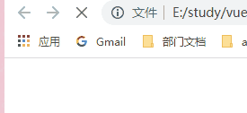ref
vue里面可以通过$refs获取到元素的dom元素以及组件中的相关模板，在组件或者标签身上添加ref属性,然后通过this.$refs.属性值获取dom元素或者组件的实例property
1.2.3.4.5.6.7.8.9.10.11.12.13.14.15.16.17.18.19.20.21.22.23.24.25.let app = Vue.createApp({ template: ` <div> <component-name ref="name"></component-name> </div> `, mounted(){ console.log(this.$refs.name); this.$refs.name.inputFocus(); }});app.component("component-name",{ template: ` <div> <input type="text" ref="input"/> </div> `, methods: { inputFocus(){ console.log(this.$refs.input); this.$refs.input.focus(); } }})app.mount("#app");自定义指令
vue2.x
1.2.3.4.5.6.7.8.9.10.11.12.13.14.15.16.17.18.19.20.21.22.23.24.25.26.27.28.29.30.31.32.33.34.35.36.37.38.39.40.41.42.43.44.45.46.47.48.49.50.51.52.53.54.55.56.//全局注册Vue.directive("指令名",options或者回调函数);//使用就通过(v-指令名)使用 //options -> 类型是一个对象或者函数 //当是方法时候里面主要就是几个指令的生命周期钩子函数,差不多就这意思吧 //当是回调函数时主要就是相当于对象中的bind和update钩子函数Vue,directive("focus",{ bind: "指令绑定在元素身上时候调用,用于初始化" inseted: "元素插入父节点时候调用,这个用的较多" update: "模板更新时候调用" unbind: "只发生一次,指令与元素解绑时候" componentUpdated: "当指令绑定元素的所在模板完成一个更新周期后执行"// // //这些钩子方法主要有"两个实参": "el": 所绑定的元素，可直接操作dom元素 "binding": { name: "指令名称"// 如v-foo ""那binding.name = foo value: "指令所绑定的值"//v-指令名称 = "绑定的值" 如v-model="foo" 那binding.value = foo指向的值 这个foo是变量不是字符串foo oldValue: "上一个绑定的值"//这个只能在update和componentUpdated中使用 arg: "指令传递的参数"//v-指令名称:传递的参数 如 v-model:foo="..." 那binding.arg = foo，这个参数可以是动态的 如v-model:[foo]="..." 那么此时binding.arg是foo指向的值 expression: "所绑定的值的字符串形式" //如v-foo="1 + 1" 那binding.expression = 1 + 1 vnode: "vue编译后的虚拟节点" oldVnode: "上一个虚拟节点,但是只能在update和componentUpdated中使用" modifiers: "获取修饰对象"//如v-model.foo.bar 那么binding.modifiers = {foo: true,bar: true}}//个人觉得常用就是 "el" 和 "binding.value"、"binding.arg"可能用的多点,其余的都不怎么用，了解就行});// // //局部注册"局部注册在property对象中有一个directives属性,它是一个对象,使用如下"Vue({ directives: { "指令名字": {"这个也可以是一个函数,它就相当于update和bind钩子方法的集合了" "这里面就和全局注册一样了," } }});"最后就是自定义指令如何使用"let app = new Vue({ el: "#app", template: `<div> <input v-focus:foo="abc"/> </div>`, directives: { focus: function(el,binding){ app.$nextTick(() => { el.focus(); }); console.log(el); "input的dom" console.log(binding.name); "focus" console.log(binding.value); "abc" console.log(binding.arg); "foo" } }});vue3.xvue3.x主要改变的就是几个周期钩子函数,钩子方法如下
| created | 当指令所在的元素上的属性或者事件监听器被应用之前调用 |
| beforeMount | 当指令第一次绑定元素并且在元素挂载父组件之前调用 |
| mounted | 在指令所绑定的元素的父组件挂载之后调用 |
| beforeUpdate | 在更新绑定元素所在组件更新之前触发 |
| updated | 绑定元素所在组件更新之后触发 |
| beforeUnmount | 当元素所在组件卸载之前调用 |
| unmounted | 当元素所在组件卸载之后调用,只会触发一次 |
常用就是mounted周期钩子函数,注册和使用都差不多
组合式API
因为这样写代码，如何碰到一些非常庞大的项目时会造成组件内容复杂和麻烦,难以理解和后期维护,所以vue又提供了组合式api,主要就是使用setup当中
在setup当中避免使用上下文this，因为它执行在data property 或者methods解析之前,所以通过this是获取不到的,它带有两个实参props和context，然后再将其余部分暴露出去(通过return返回,计算属性、生命周期函数等)
1.2.3.4.5.6.7.8.9.10.11.12.13.14.15.16.17.18.19.20.21.22.23.24.25.26.27.28.29.30.31.32.33.34.35.36.37.38.39.40.41.42.43.44.let app = Vue.createApp({ template: `<div> <component-name :name="name" :age="18"></component-name> </div>`, data(){ return { name: "李xx", age: 18 } }});app.component("component-name",{ props: { name: String, age: Number }, setup(props,context){ console.log(props); //{name: '李xx',age: 18} let usersInfo = []; const getUsersInfo = () => { //这里面调接口拿到相关用户的信息赋值给usersInfo usersInfo = [ {uid: "001",name: "李同学",age: "18",tel: "186xxx"}, {uid: "002",name: "吴同学",age: "25",tel: "132xxx"} ]; console.log("里面的usersInfo",usersInfo); }; return { usersInfo, getUsersInfo }; //这里注意usersInfo不是一个响应式的 //也就是说你再执行getUsersInfo拿到并且赋予的usersInfo和你返回去的没有关联了 //也不会影响返回的usersInfo }, template: ` <div> <button @click="getUsersInfo()">获取usersInfo</button> <p>usersInfo</p> <div>{{usersInfo}}</div> </div> `});app.mount("#app");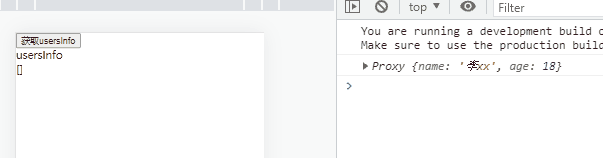可以看到上面结果,setup和传出来的已经不是同一个了,他们之间互不影响,所以不是响应式的
ref
ref是Vue提供的一个创建响应式的变量，能够在任何地方都能使用,如果上面那个usersInfo是通过ref创建的话,外面的也是会影响的
1.2.3.4.5.6.7.8.//引入import {ref} from "vue"//创建响应式引用const usersInfo = ref([]);//这个还可以Vue.ref([]);//赋值usersInfo.value = "newVal";//获取console.log(usersInfo.value);生命周期钩子函数
vue3.x新导出来了几个新的函数，名字和vue2.x的名字差不多,就是在原来的基础上加了个on + 原来的钩子函数大驼峰,比如mounted,那现在就是onMounted,然后使用就需要导入,里面传一个回调函数,当钩子被组件调用时就会调用回调函数，然后之前的created和beforeCreate都被废弃掉了,因为setup就是发生在阶段,所以需要使用完全在setup里面使用就好了
1.2.3.4.5.6.7.8.9.10.11.12.13.14.15.16.Vue.createApp({ setup(props,context){ //在脚手架里面通过import按需引入就好了 //我这是因为不是在脚手架里面要编译,然后就不用Vue.了 "import {onBeforeMount,mounted} from "vue";" Vue.onBeforeMount(function(){ console.log("beforeMount"); }); Vue.onMounted(function(){ console.log("mounted"); }); }, template: `<div> <h3>vue3.x生命周期钩子函数使用</h3> </div>`}).mount("#app");watch使用
1.2.3.4.5.6.7.8.9.10.11.12.13.14.15.16.17.18.19.20.21.22.23.24.25.26.27.28.29.30.31.32.33.34.35.36.37.38.39.40.41.42.43.44.45.46.47.48.49.50.Vue.createApp({ setup(props,context){ const counter = Vue.ref(0); //脚手架中 import {ref,watch} from "vue" Vue.watch(counter,(newVal,oldVal) => { console.log(`newVal = ${newVal},oldVal = ${oldVal}`); }); const changeCounter = () => { counter.value = 1; } return { changeCounter, counter } }, template: ` <div> <button @click="changeCounter()">改变counter</button> {{counter}} </div> ` /*"这块对于watch的参数还得讲一下" "它一共有三个参数，第一个是监听的响应式引用,第二个是回调方法,里面有两个参数,一个是改变后的值,一个是改变前的值,最后一个参数是一些options配置,它是一个对象" "因为监听引用类型的值是监听不到的" "还有监听对象或者数组引用值需要拷贝一个副本" "比如: "*/ const counter = ref({ value: 0 }); const changeCounter = () => { counter.value.value = 1; }; /* "这个watch是监听不到的,但是设置options就能监听到" */ Vue.watch(() => counter,(newVal,oldVal) => { //加上这个deep就能深度监听了, },{ deep: true }) // "watch还可以监听多个,传数组就好了" const str1 = ref("1'); const str2 = ref("2"); Vue.watch([str1,str2],(newVal,oldVal) => { console.log(newVal,oldVal); }); str1.value = "2"; //["2","2"] ["1","2"] str2.value = "3";//["2","3"] ["2","2"] // "深度克隆" import _ from "lodash"; Vue.watch(() => _.cloneDeep(克隆的响应式的值),(newVal,oldVal)=>{},{deep: true})}).mount("#app");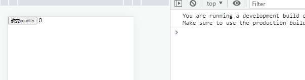computed
它和vue2.x的意义的一样的，用法就传一个回调方法过去,当回调方法里面的表达式发生改变时执行表达式并且将结果缓存下来
1.2.3.4.5.6.7.8.9.10.11.12.Vue.createApp({ setup(props,context){ //脚手架引入 import {computed,ref} from "vue"; const counter = Vue.ref(1); const twiceTheCounter = Vue.computed(() => counter.value * 2);//返回的也是一个响应式的值 consle.log(counter.value);//1 console.log(twiceTheCounter.value);//2 counter.value++; console.log(counter.value);//2 console.log(twiceTheCounter);//4 }});组合式函数
看到这些写法有人就会发现这不就是把之前data或者mounted等里面的代码都移动到了setup里面了吗,那代码不都一样吗,所以又出来一个组合式函数,可以把相关的一些数据和方法封装起来然后导出,然后函数将所需要的响应式引用返回,需要使用就引入执行函数通过解构拿到相关的数据以及方法
1.2.3.4.5.6.7.8.9.10.11.12.13.14.15.16.17.18.19.20.21.22.23.24.25.26.27.28.29.30.31.32.33.34.35.36.37.38.39.40.41.42.43.44.45.46.47.48.49.50.51.52.53.54.55.56.57.58.59.60.61.62.63.64.65.66.67.68.69.70.71.72.73.74.75.76.77.78.79.80.81.82.83.84.85.86.87.88.89.90.91.92.93.94.95.96.97.98.99.100.101.102.103.104.105.106.107.108.109.110.111.112.113.//来个形象的todoList例子吧//一个输入框点击添加,输入待办事项点击添加以及//事项里面分为已完成事项以及未完成事项//已完成事项有一个删除按钮,以及它的背景颜色是暗灰色的,排在后面//未完成事项有删除和已完成按钮,颜色是淡白色,全排在前面//还有事项搜索功能//这块可能有很多的麻烦,比如这个删除和完成就不能通过index去完成,因为一旦搜索了,这个index就不准确了,所以我们要通过对比唯一键状态//还有删除的时候,它是搜索状态还是未搜索的function useTodoListService(list){ //添加 const addItem = (con) => { if(con.trim() === ""){ alert("请先输入代办事项"); return; } list.value.unshift({ id: Symbol(), con, status: "unfinished", createTime: parseInt(new Date().getTime() / 1000) }); }; //删除 const deleteItem = (id) => { for(let i = 0;i < list.value.length;i++){ if(list.value[i].id === id){ if(list.value[i].status === "unfinished"){ if(!confirm("你删除的是未完成的事项,确定要删除?")){ return; } } list.value.splice(i,1); } } }; //已完成 const finishItem = (id) => { //这里我犯了一个错,splice返回的是一个数组包含截下来的内容 let itemInfo; for(let i = 0;i < list.value.length;i++){ if(list.value[i].id === id){ [itemInfo] = list.value.splice(i,1); itemInfo.status = "finish"; itemInfo.finishTime = parseInt(new Date().getTime() / 1000); list.value.push(itemInfo); } } }; return { addItem, deleteItem, finishItem };}function useTodoListSearchQuery(list){ const query = Vue.ref(""); const filterList = Vue.ref([]); const search = () => { //这里我犯了一个错filter并不改变元数组,所以重新赋值,但是我并没有 filterList.value = list.value.filter(item => item.con.includes(query.value)); } Vue.watch(query,search); return { search, query, filterList };}Vue.createApp({ setup(props,context){ const todoList = Vue.ref([]); const todoCon = Vue.ref(""); const {query,search,filterList} = useTodoListSearchQuery(todoList); const {addItem,deleteItem,finishItem} = useTodoListService(todoList); const list = Vue.computed(() => query.value !== "" ? filterList.value : todoList.value) Vue.watch(() => [...todoList.value],() => { if(query.value !== ""){ filterList.value = todoList.value.filter(item => item.con.includes(query.value.trim())); } }); return { list, query, todoList, search, addItem, deleteItem, finishItem }; }, template: ` <div> <div class="container"> <div class="addBeDeal"> <input type="text" placeholder="请输入你要新增的代办事项" v-model="todoCon"/> <button @click="addItem(todoCon);todoCon = '';">添加</button> </div> <div class="searchCon"> <input type="text" placeholder="请输入搜索内容" v-model="query"/> </div> <h3>我的代办事项</h3> <ul> <li v-for="(item,index) in list" :class="item.status === 'finish' ? 'finished' : 'unfinished'" :key="item.id"> <span>{{item.con}}</span> <button @click="finishItem(item.id)" v-if="item.status === 'unfinished'" class="finishBtn">已完成</button> <button @click="deleteItem(item.id);" class="deleteBtn">删除</button> </li> </ul> </div> </div> `}).mount("#app");//有人会觉得代码还是这么多代码,但是我们利用模块化就不一样了,函数式编程setup
setup有两个参数,分别是props和context,props对应的就是vue2.x里面的props,context里面包含四个属性,attrs就是对应vue2.x里面的$attrs、slots对应$slots插槽、emit对应$emit方法、expose暴露公共的property
有时候想要结构props里面的属性时,会令它失去响应式效果,当属性值改变时,解构出来的值不会改变,所以vue提供了一个让结构出来的属性还能继续保持响应式效果的方法toRefs,而context里面的四个属性的都不是响应式的,所以可以通过解构出来
在setup里面不能访问data、conputed、methods、refs等
响应式对象在被return时会自动浅解包,所以在外面使用就不需要.value了,但是如果要访问嵌套的响应式值时还是需要通过.value
1.2.3.4.5.6.7.8.9.10.11.12.13.14.15.16.17.18.19.20.21.Vue.createApp({ setup(props,context){ const counter = Vue.ref(0); //如果不想通过.value去访问值,也可以通过reactive包裹就可以直接解包，接收一个对象作为shi'can //但是仅限于被Object嵌套才能被解包,而被Array或者Map嵌套的时候是不行的 return { counter,//这个在外面访问是不需要.value的 obj: { counter//这个就需要.value了 }, obj1: Vue.reactive({counter}), arr: [counter]//这个也需要.value }; }, mounted() { console.log("counter",this.counter);//0 console.log("obj",this.obj.counter);//一个Proxy对象 console.log("obj1",this.obj1.counter);//0 console.log("arr",this.arr[0]);//一个Proxy对象 },}).mount("#app");toRefs
响应式的变量是不能通过ES6的解构来解构出来，这样会导致变量失去响应式的效果,像props是响应式的,所以想要使用它里面的属性时时不能解构的,否则在父元素中改变相应的属性时,子元素里面所用的属性是不会改变的，所以我们可以通过toRefs使得解构出来的属性同样具有响应式的效果，如果
1.2.3.4.5.6.7.8.9.10.11.12.13.14.15.16.17.18.19.20.21.22.23.24.25.26.27.28.29.30.31.32.33.34.35.36.let app = Vue.createApp({ data(){ return { msg: "props传参" } }, template: ` <div> <h3>父元素</h3> <div @click="msg = '改变msg后的值'">改变msg</div> <div>父元素当中msg的值 => {{msg}}</div> <component-name :msg="msg"></component-name> </div> `});app.component("component-name",{ props: { msg: String }, setup(props,context){ let {msg} = props; let state = Vue.reactive(Vue.toRefs(props)); return { msg, state } }, template: ` <div> <h3>子元素</h3> <div>"子元素当中msg的值" => {{msg}}</div> <div>子元素中使用toRefs拿到的msg: {{state.msg}}</div> </div> `});app.mount("#app");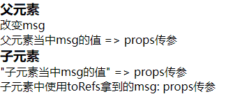响应式只读
设置响应式变量只能读取不能修改
1.2.3.4.5.6.7.8.9.10.11.12.Vue.createApp({ setup(){ const original = Vue.reactive({count: 1}); const copy = Vue.readonly(original); original.count++; copy.count++;//这个是不能更改的,会包警告错误 console.log(original.count,copy.count);//2 2 }, template: `<div> <h3>响应式变量只读</h3> </div>`}).mount("#app");setup渲染函数
这个函数就和之前的render方法一样,不过这次这个函数是直接在setup中return出去的,但是如果return出去的是一个渲染函数，那之前return的property如何传递给外部尼,这就要使用到context里面的其中一个属性,通过expose通过模板ref传递给父组件
1.2.3.4.5.6.7.8.9.10.11.12.13.14.15.16.17.18.19.20.21.22.23.24.25.26.27.28.29.30.31.32.33.34.35.36.let app = Vue.createApp({ template: ` <div> <h3>expose和渲染函数使用</h3> <component-name ref="com"></component-name> </div> `, setup(){ const com = Vue.ref(null); Vue.onMounted(() => { setTimeout(() => { com.value.increment(); },1000); }); return { com } }});app.component("component-name",{ setup(props,{expose}){ let count = Vue.ref(10); const increment = () => { count.value -= 1; }; expose({ count, increment });//expose的用法就是把之前return的对象放在里面 return () => Vue.h("div",count.value); }, template: ` <div>测试渲染函数和template的优先级</div> `})app.mount("#app");vue3.x的模板引用
上一个例子当中已经使用过了,就是建立一个值为null的响应式的变量,绑定在组件身上的模板名字就对应这个响应式的变量,然后就可以直接使用了
1.2.3.4.5.6.7.8.9.10.11.12.13.14.15.16.17.18.19.20.21.22.23.24.25.26.27.28.29.30.31.32.let app = Vue.createApp({ template: ` <div> <component-name ref="root"></component-name> </div> `, setup(props,context){ const root = Vue.ref(null); Vue.onMounted(() => { console.log(root.value.self); //Proxy({count: 1}) }); return { root }; } //在渲染函数里面使用 return () => h("div",{ref: root}); //jsx return () => <div ref={root}></div>});app.component("component-name",{ setup(props,context){ const self = Vue.reactive({count: 1}); return { self }; }, template: ` <div>子组件</div> `});app.mount("#app");在v-for里面使用
1.2.3.4.5.6.7.8.9.10.11.12.Vue.createApp({ template: ` <div v-for="(item,i) in list" :ref="el => {if(el){divs[i] = el;}}"></div> `, setup(props,context){ const list = Vue.reactive([1,2,3,4]); const divs = Vue.ref([]); Vue.onBeforeUpdate(() => { divs.value = []; }); }}).mount("#app");vue3.x的provide
vue3.x也将provide和inject分离出来了,可以单独引入使用,它们都是方法,provide使用就是传递两个参数,一个是属性名,一个是属性值,可以多次使用,inject的使用就是传入对应的属性名，可以接收到相应的属性值,它还有第二个参数,是属性值的默认值,可传可不传,但是它们都不是响应式的,所以如果需要是响应式的就配合ref和reactive一起使用
1.2.3.4.5.6.7.8.9.10.11.12.13.14.15.16.17.18.19.20.21.22.23.24.25.26.27.28.29.30.31.32.33.34.35.36.37.38.39.40.41.42.43.44.45.46.47.48.49.50.let app = Vue.createApp({ template: ` <div> <h3>父元素</h3> <p>msg: {{msg}}</p> <p>responsiveMsg: {{responsiveMsg.msg}}</p> <button @click="changeMsg()">改变非动态msg</button> <button @click="changeResponsiveMsg()">改变动态msg</button> <component-name></component-name> </div> `, setup(props,context){ let msg = "不能更改的内容"; let responsiveMsg = Vue.reactive({msg: "可以动态更改的内容"}); Vue.provide("msg",msg); Vue.provide("responsiveMsg",responsiveMsg);//这块如果想要传递的属性值是只读的可以配合readonly一起使用,那子元素那边就不能更改了 const changeMsg = () => { msg = "改变后的内容"; }; const changeResponsiveMsg = () => { responsiveMsg.msg = "改变后的内容"; }; return { changeMsg, changeResponsiveMsg, msg, responsiveMsg }; }});app.component("component-name",{ setup(props,context){ const msg = Vue.inject("msg"); const resMsg = Vue.inject("responsiveMsg"); return { msg, resMsg }; }, template: ` <div> <h3>子元素</h3> <button @click="msg = '子元素改变msg内容'">改变msg内容</button> <button @click="resMsg.msg = '子元素改变resMsg内容'">改变resMsg内容</button> <p>msg: {{msg}}</p> <p>responsiveMsg: {{resMsg.msg}}</p> </div> `});app.mount("#app");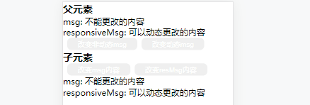Mixin
Mixin是用来分发Vue组件中的可复用功能
1.2.3.4.5.6.7.8.9.10.11.12.13.14.15.16.17.18.19.20.21.22.23.24.25.26.27.28.29.30.31.32.33.34.35.36.37.38.39.40.41.42.43.44.45.let myMixin = { data(){ return { msg: "这是myMixin中的msg属性", name: "myMixin" } }, methods: { foo(){ console.log("mixin foo"); }, conflict(){ console.log("myMixin"); } }, created(){ console.log("myMixin里面的created生命周期钩子函数执行");//这说明复用和自身都有的钩子函数,将会合并,会都触发 }};Vue.createApp({ mixins: [myMixin], data(){ return { name: "root" } }, methods: { bar(){ console.log("bar"); }, conflict(){ console.log("self"); } }, created(){ console.log("自身的生命周期钩子函数被调用"); console.log(this.msg);//这是myMixin中的msg属性 console.log(this.name);//root "这说明当自身没有这个数据会合并,当自身有则以自身优先" this.foo();//foo this.conflict();//self this.bar();//bar // "methods这边和data是一样的,自身有自身优先,自身没有就合并" //同样components和directives也是一样的 }}).mount("#app");全局mixin这个会在全部组件中都会应用到,所以是针对全部组件的
1.2.3.4.5.6.7.8.9.10.11.12.13.14.15.16.17.18.19.20.21.22.23.24.25.26.27.28.let app = Vue.createApp({ created(){ console.log(this.$data.globalData); }, template: ` <div> <component-name></component-name> </div> `});app.mixin({ data(){ return { globalData: { msg: "全局数据" } } }});app.component("component-name",{ created(){ console.log(this.$data.globalDat); }, template: ` <div>全局mixin</div> `});app.mount("#app");全局合并策略
1.2.3.4.app.config.optionMergeStrategies.customoption = function(toVal,fromVal){ return toVal || fromVal;//以全局为主 return fromVal || toVal;//以自身为主}